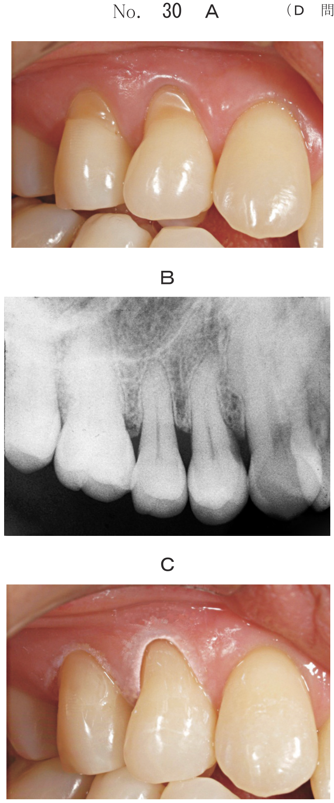
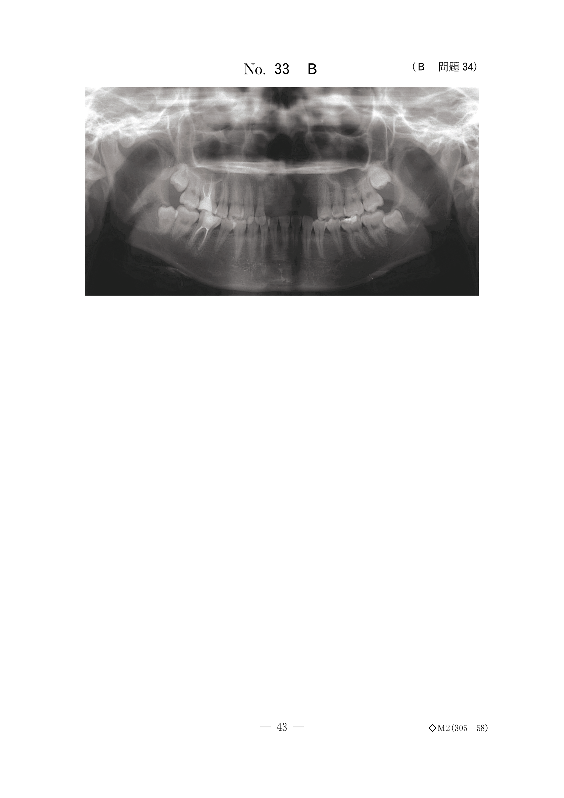

低位乳歯・骨性癒着
低位乳歯とは
低位乳歯とは、咬合面が隣在歯より低い位置にある乳歯のことである。萌出異常の一種であり、萌出量の異常に分類される。
- 咬合面が隣在歯より低い位置にある
- 下顎第一乳臼歯に多い（上顎ではない）
- 乳児期には見られない（乳歯萌出後に発現）
- 晩期残存しやすい
低位乳歯の原因
低位乳歯の主な原因は乳歯根の骨性癒着（アンキローシス）である。
骨性癒着とは、歯根と歯槽骨が直接癒合し、歯根膜が消失した状態をいう。骨性癒着を起こすと、歯槽骨の成長に追随できなくなり、相対的に低位となる。
発生機序
- 乳歯根の歯根膜が消失
- 歯根と歯槽骨が直接癒合
- 歯槽骨の垂直的成長に追随できない
- 相対的に咬合面が低くなる
低位乳歯の影響
咬合・歯列への影響
| 影響 | 内容 |
|---|---|
| 隣在歯の傾斜・移動 | 低位乳歯に向かって隣在歯が傾斜し、後継永久歯の萌出余地が減少 |
| 対合歯の挺出 | 咬合していないため対合歯が挺出する |
| 晩期残存 | 骨性癒着により生理的脱落が妨げられる |
処置
抜歯を考慮した定期的観察が基本となる。隣在歯の傾斜が著しい場合や後継永久歯の萌出障害が予想される場合は抜歯を行う。
低位乳歯の臨床的特徴はどれか。2つ選べ。
b 隣接歯の傾斜を招く。
c 歯根嚢胞が原因である。
d 歯槽骨の石灰化不全を伴う。
e 上顎第一乳臼歯に多く発現する。
【解説】低位乳歯は萌出量の異常であり（a○）、隣接歯の傾斜を招く（b○）。原因は骨性癒着であり歯根嚢胞ではない（c×）。歯槽骨の石灰化不全は無関係（d×）。好発部位は下顎第一乳臼歯であり上顎ではない（e×）。
5歳の男児。下顎右側第一乳臼歯の低位を主訴として母親と来院した。初診時の口腔内写真（別冊No.46A）とエックス線写真（別冊No.46B）とを別に示す。
今後考慮すべきなのはどれか。2つ選べ。


b 早期脱落
c Turner歯
d 隣在歯の移動
e 歯根と歯槽骨との癒着
【解説】低位乳歯では隣在歯の移動（d○）と骨性癒着（e○）を考慮する。舌突出癖は低位乳歯と無関係（a×）。骨性癒着があると早期脱落ではなく晩期残存となる（b×）。Turner歯は乳歯の根尖性歯周炎が原因（c×）。
外傷と骨性癒着
歯の外傷、特に脱落歯の再植後に骨性癒着が生じやすい。
再植後の骨性癒着の機序
- 再植歯の歯根膜が損傷・壊死
- 歯根膜が消失し、歯根と歯槽骨が直接接触
- 置換性吸収：歯根が歯槽骨に置換される
- 若年者は骨のモデリングが活発なため、進行が早い
- 高い打診音（金属音）：隣在歯と比較して高い音
- 動揺の消失：歯根膜がないため動揺しない
- X線所見：歯根膜腔の消失、歯根の吸収像
10歳の男児。前歯が咬み合わないことを主訴として来院した。8歳時に下顎の前歯を強打したという。下顎右側中切歯は隣在歯に比べ高い打診音を呈する。保隙装置装着時の口腔内写真（別冊No.41A）とエックス線写真（別冊No.41B)とを別に示す。
1┐で疑われるのはどれか。2つ選べ。


b 歯冠破折
c 歯根破折
d 歯根吸収
e 骨性癒着
【解説】外傷歴があり高い打診音を呈することから骨性癒着（e○）が疑われる。X線写真で歯根吸収像も認められる（d○）。骨性癒着により歯槽骨の成長に追随できず開咬となっている。
外傷を受けた小児の口腔内写真（別冊No.31A）、脱落した歯の写真（別冊No.31B）及び処置後の口腔内写真（別冊No.31C）を別に示す。
今後生じる可能性が高いのはどれか。1つ選べ。


b 内部吸収
c 歯髄腔の狭窄
d 歯髄の石灰変性
e セメント質の肥厚
【解説】脱落歯の再植後は骨性癒着が生じやすい（a○）。再植により歯根膜が損傷し、置換性吸収が起こるためである。内部吸収は歯髄の炎症による（b×）。歯髄腔狭窄・石灰変性は外傷後に生じうるが、再植後は骨性癒着の可能性が最も高い。
鑑別：外傷後の歯髄腔狭窄
外傷後には骨性癒着以外にも歯髄腔狭窄が生じることがある。歯髄電気診で生活反応を示す場合は骨性癒着ではなく歯髄腔狭窄を考える。
4歳の女児。下顎左側乳中切歯の変色を主訴として来院した。1年前に「Aを受傷し、3か月前から変色してきたという。歯髄電気診で生活反応を示した。初診時の口腔内写真（別冊No.35A）とエックス線画像(別冊No.35B）を別に示す。
「Aの所見で正しいのはどれか。1つ選べ。


b 歯根破折
c 歯根彎曲
d 内部吸収
e 歯髄腔狭窄
【解説】外傷後の変色だが歯髄電気診で生活反応あり。生活歯であることから歯髄腔狭窄（e○）が正解。骨性癒着は歯根膜の問題であり歯髄の生死とは直接関係しない（a×）。
骨性癒着が起こらない状況
骨性癒着は歯根膜の損傷・消失が原因であるため、歯根膜が正常な状況では起こらない。
乳歯列後期にエックス線検査で上顎正中部に埋伏過剰歯を認めた。
そのままにしていた場合に上顎中切歯に生じる可能性が高いのはどれか。2つ選べ。
b 歯冠の形態異常
c 歯冠の色調異常
d 歯根の形成障害
e 萌出方向の異常
【解説】埋伏過剰歯は萌出方向の異常（e○）や歯根形成障害（d○）を引き起こす。骨性癒着は起こらない（a×）。骨性癒着は歯根膜の損傷が原因であり、過剰歯の存在とは無関係である。
発現時期に関する出題
乳児期にみられるのはどれか。2つ選べ。
b 上皮真珠
c 低位乳歯
d 萌出性腐骨
e タウロドント
【解説】先天歯（a○）と上皮真珠（b○）は乳児期に見られる。低位乳歯は乳児期には見られない（c×）。低位乳歯は乳歯萌出後、隣在歯との比較で初めて認識されるため、乳児期には診断できない。
まとめ
| 項目 | 低位乳歯 | 外傷後の骨性癒着 |
|---|---|---|
| 原因 | 乳歯根の骨性癒着 | 再植後の歯根膜損傷 |
| 好発部位 | 下顎第一乳臼歯 | 上顎前歯（外傷好発部位） |
| 診断 | 咬合面の高さ、X線 | 高い打診音、動揺消失 |
| 影響 | 隣在歯傾斜、対合歯挺出 | 低位、置換性吸収 |
| 処置 | 経過観察、抜歯 | 経過観察 |